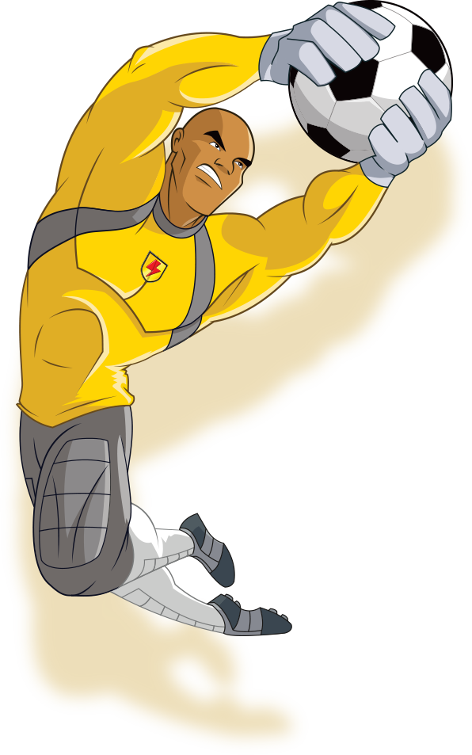

;
ABOUT BIG BO
Bojack "Big Bo" Anderson is Supa Strikas's trusty goalkeeper and is almost big enough to fill the entire goal mouth.
He looks intimidating to strikers from the opposing team, but in reality is a family man with a heart of gold who wouldn't
hurt a fly even though he can catch one easily just using his hand. His goalkeeping skills ensured that Supa Strikas win the
Super League trophy. Although not the best goalkeeper in the world, his consistent performance makes him one of the more
competent goalkeepers in the Super League. Big Bo's endurance and strength ensures that he is always prepared to play at
the highest form. At the age of about 34 years old, Big Bo is one of the oldest players in Supa Strikas. He is also one of
the richest, having a net worth of $236 million dollars and a butler.